Blog. Ce qu'il faut savoir pour traduire le droit suisse
Guides
Les articles de fond et les guides pratiques de l'équipe juridique et linguistique de Neur.on.
Traduire un contrat en droit suisse : comment ne pas s'écarter du texte de loi
Les lois fédérales existent en allemand, en français et en italien, et les trois versions font foi. Conséquences concrètes pour un contrat : abréviations qui changent selon la langue, anglais sans valeur légale, faux amis entre l'italien de Suisse et celui d'Italie, et une méthode de vérification en trois minutes.
Deux devis de traduction juridique pour le même contrat : pourquoi l'écart ?
Ce qu'est une page standard et pourquoi elle rend deux devis comparables, ce que garantit exactement chacun des trois niveaux de relecture externe, pourquoi la relecture interne paraît gratuite, et les huit questions à poser avant de valider un devis, quel que soit le prestataire.
ConfidentialitéSecret professionnel et outils de traduction : stockés en Suisse, mais traités où ?
Stocker n'est pas traiter, et seule la seconde question engage le secret. Ce que protège réellement une pseudonymisation, pourquoi un avertissement affiché dans l'outil vaut mieux qu'une charte oubliée, et douze questions à poser à un fournisseur avant de lui confier un dossier.
Actualités
Prix et distinctions, conférences, partenariats, presse et recherche.
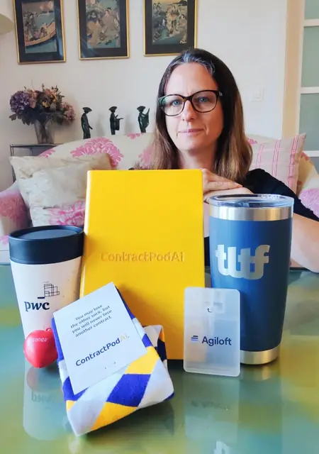
ActualitésPaula Reichenberg présente Neur.on à l’événement PwC et The LegalTech Fund de Londres
Lors d’un événement londonien sur invitation, la CEO de Neur.on a présenté la solution devant des acteurs de la legaltech. Elle en est repartie avec trois « prix » inattendus, dont un constat : la demande de traduction juridique multilingue grandit.
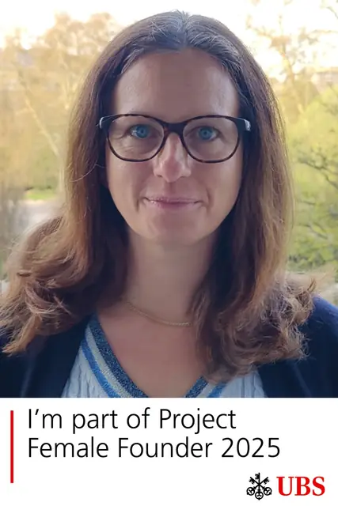
ActualitésPaula Reichenberg, CEO de Neur.on, fait partie du Female Founder Project 2025 d’UBS
Les fondatrices ne reçoivent pas les mêmes questions que les fondateurs lors des levées de fonds. Paula Reichenberg, CEO de Neur.on, a choisi de s’y préparer avec le programme d’UBS, et elle espère des questions vraiment retorses.
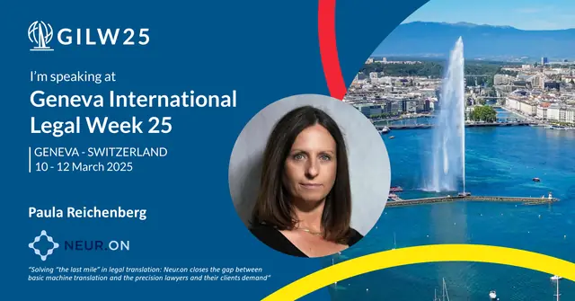
ActualitésGeneva International Legal Week 2025 : un panel sur l’IA rentable avec Paula Reichenberg
Les coûts initiaux de l’IA ne sont-ils que des « frais de formation » ? Pour qui maîtrise son budget, l’IA doit améliorer le retour sur investissement. À Genève, un panel partage des conseils concrets pour l’utiliser de façon rentable.
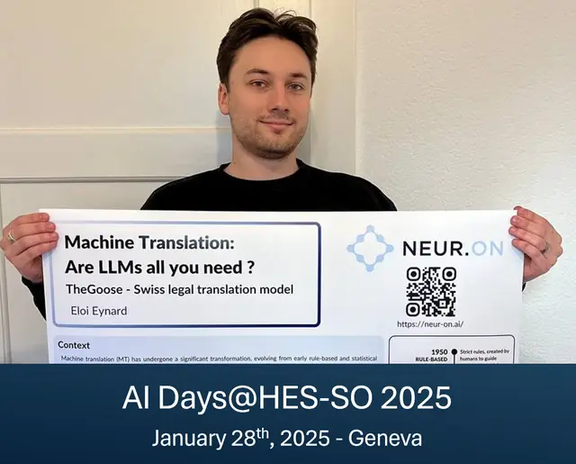
ActualitésNeur.on aux AI Days 2025 à Genève : comment entraîner un LLM à bien traduire
Que faut-il pour qu’un LLM devienne un excellent traducteur de textes juridiques et financiers ? Eloi Eynard, data scientist chez Neur.on, présente les méthodes de l’équipe aux AI Days 2025, et l’origine du nom « TheGoose ».
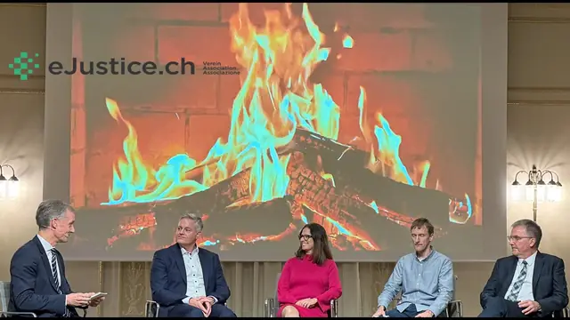
Actualités40 ans d’eJustice.ch : la CEO de Neur.on débat du « Swiss Justice Base Model »
L’association eJustice.ch inaugure une série de discussions en petit comité entre droit et technologie. Parmi les sujets attendus au premier rendez-vous : souveraineté de l’IA, propriété intellectuelle, sécurité des données et philosophie du droit.
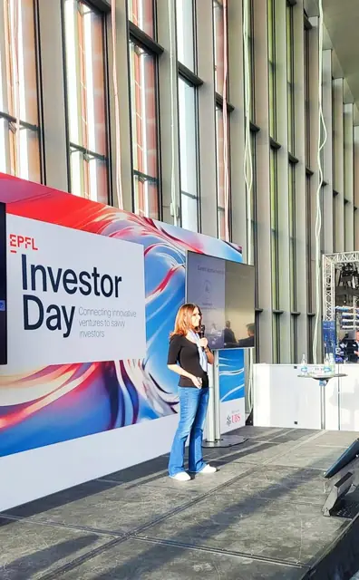
ActualitésPaula Reichenberg, CEO de Neur.on, pitche à l’EPFL Investor Day 2024
Trois minutes sur scène et un conseil inattendu reçu en masterclass : retirer la diapositive consacrée à l’équipe. Paula Reichenberg l’a appliqué dès l’après-midi, pour un pitch plus détendu et, espérons-le, plus convaincant.
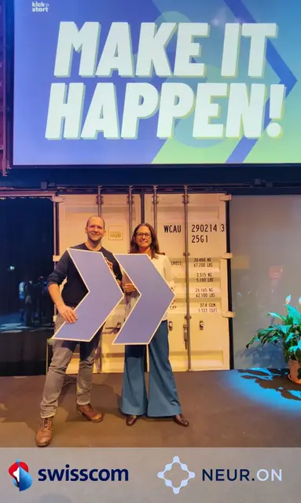
ActualitésNeur.on et Swisscom annoncent une collaboration pour les secteurs juridique et bancaire
Un PoC pour offrir aux banques et aux cabinets d’avocats suisses une boîte à outils sécurisée de traduction et de rédaction, hébergée en Suisse. Neur.on figure parmi les premières entreprises à déployer sur la nouvelle infrastructure GPU NVIDIA de Swisscom.
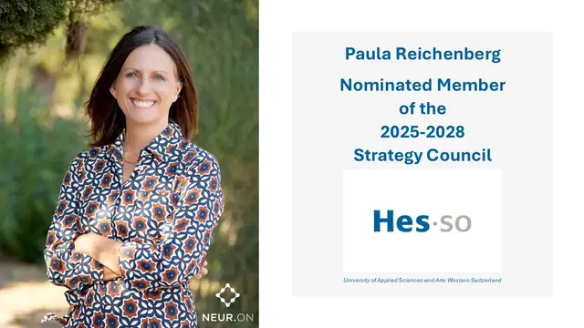
ActualitésPaula Reichenberg désignée au Conseil stratégique de la HES-SO pour 2025-2028
Planter des arbres pour que les générations futures en récoltent les fruits : Paula Reichenberg siégera dans un organe consultatif de la HES-SO, aux côtés de personnalités de l’économie, de la santé, du social et de la culture.
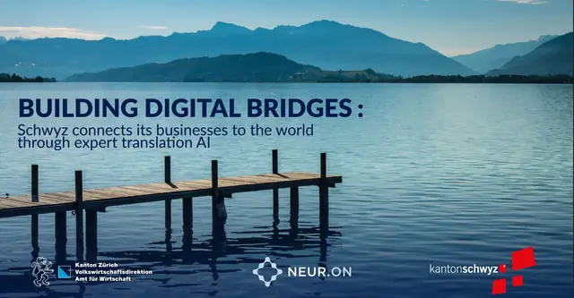
ActualitésRegistre du commerce de Schwyz : des extraits traduits en anglais par l’IA de Neur.on
Chaque mois, des centaines de personnes demandaient au registre du commerce de Schwyz une traduction anglaise fiable d’un extrait. Retour sur un projet né dans l’Innovation Sandbox du canton de Zurich, et sur les pièges des notions juridiques suisses.
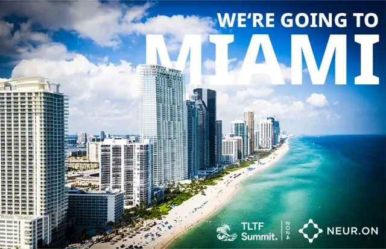
ActualitésNeur.on parmi les 24 start-up du Startup Showcase du TLTF Summit 2024 à Miami
Des centaines de candidatures, 24 invitations : Neur.on présentera sa suite d’IA de traduction juridique en décembre devant des investisseurs, des géants du secteur et des leaders de la LegalTech réunis sur invitation.
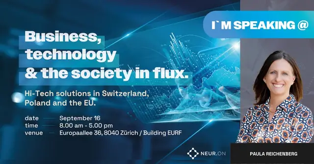
ActualitésIA et études d’avocats : Paula Reichenberg au panel « AI in Business » de Zurich en 2024
Les investissements dans l’IA en valent-ils la peine pour les études d’avocats et les PME ? Avant le panel « AI in Business » de Zurich, Paula Reichenberg pose la question du retour sur investissement et des recettes qui fonctionnent.
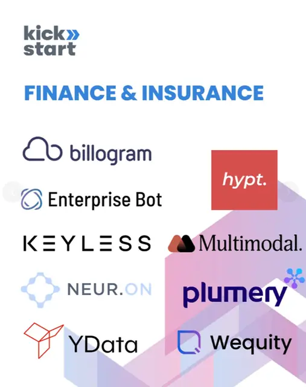
ActualitésNeur.on intègre la cohorte 2024 de Kickstart Innovation, verticale Finance & Insurance
Plus de 310 preuves de concept et accords commerciaux, plus de CHF 2,5 milliards levés par ses alumni : Kickstart Innovation accueille Neur.on dans sa promotion 2024, aux côtés de partenaires comme Swisscom, PostFinance, AXA et MSD.
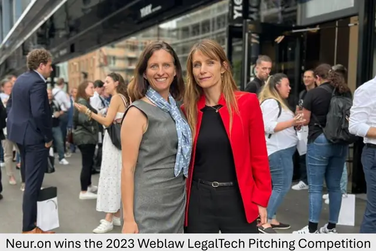
ActualitésPaula Reichenberg, CEO de Neur.on, au jury de l’Elevator Pitch Competition du Weblaw Forum 2024
Lauréate de l’édition précédente, Neur.on passe de l’autre côté de la table. Paula Reichenberg évaluera les pitchs selon les critères d’investissement LegalTech de Julia Maltby, dont trois sont présentés ici.
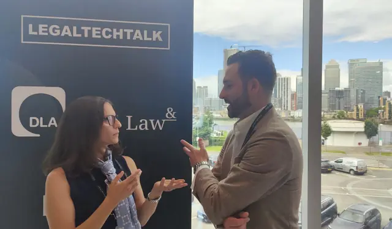
ActualitésLes enseignements clés de la conférence LegalTechTalk 2024 à Londres
« Je refuse de payer pour des informations que j’ai déjà. » Directeurs juridiques et cabinets d’avocats ont confronté leurs points de vue sur la confiance, l’efficacité et la place de la technologie dans les services juridiques.
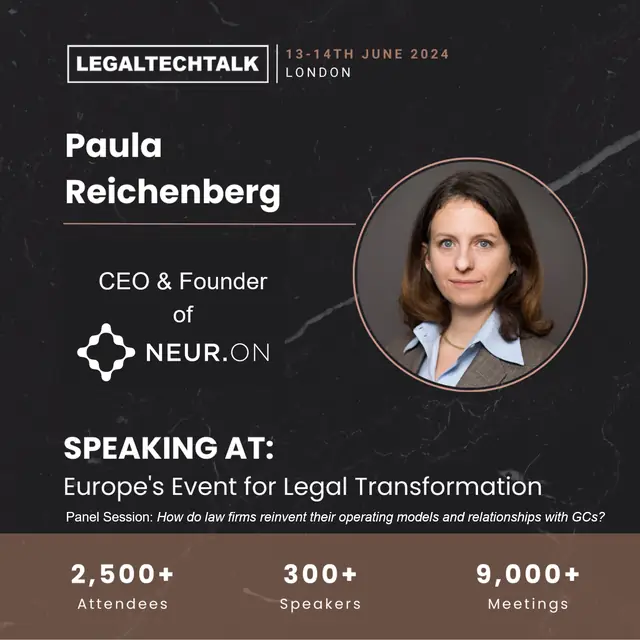
ActualitésLegalTechTalk 2024 à Londres : réinventer le modèle opérationnel des cabinets d’avocats
Pourquoi les cabinets d’avocats ont-ils intérêt à changer de modèle, et comment s’y prendre ? James Lane, Line Lolk Thomsen et Jordan Lee partagent leur expérience dans un panel modéré par Paula Reichenberg.
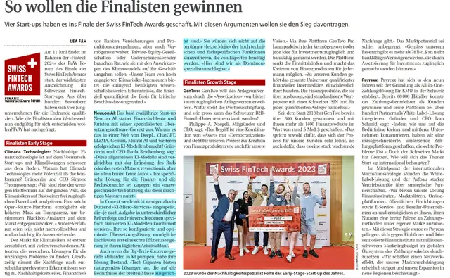
ActualitésNeur.on finaliste des Swiss FinTech Awards 2024 dans la catégorie Early Stage
Neur.on face à ChatGPT ou Gemini, un duel de David contre Goliath ? Pas vraiment. L’image du moteur à combustion et des fusées sur mesure éclaire le positionnement de Corrext, à lire aussi dans Finanz und Wirtschaft.
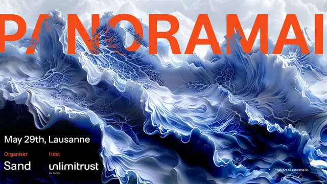
ActualitésNeur.on au GEN AI Summit 2024 de Lausanne : les défis de l’IA en traduction juridique
Pourquoi des outils comme DeepL peinent-ils sur les textes juridiques et financiers spécialisés ? Au GEN AI Summit 2024, la CEO de Neur.on a évoqué les nuances entre systèmes juridiques, les barrières culturelles et l’avenir de l’IA en traduction.
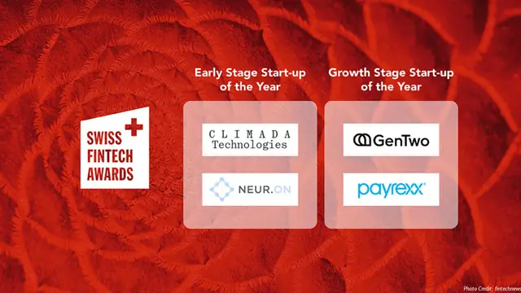
ActualitésNeur.on parmi les 4 finalistes des Swiss FinTech Awards 2024
Comment une plateforme de traduction peut-elle concourir dans une compétition FinTech ? Pour les banques, une langue précise est l’écrin de leur expertise. Le jury des Swiss FinTech Awards l’a bien compris.
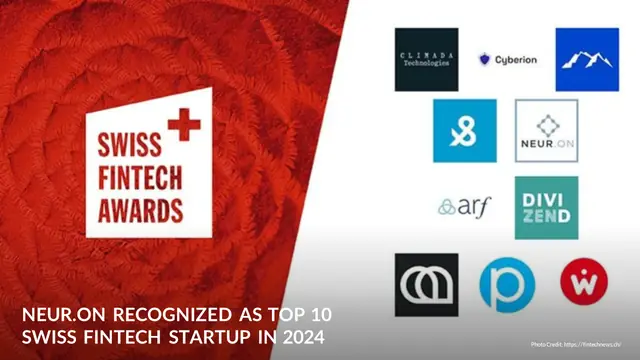
ActualitésNeur.on dans le Top 10 des start-up fintech suisses des Swiss FinTech Awards 2024
Sur 100 dossiers déposés, un panel de 20 experts a retenu cinq start-up par catégorie. Neur.on en fait partie en Early Stage, avec à la clé un atelier fintech et la Swiss FinTech Awards Night.
ActualitésIA et secteur juridique : Paula Reichenberg en table ronde le 17 avril 2024 à Zurich
Effets, opportunités et risques de l’IA pour le droit : Paula Reichenberg, CEO de Neur.on et vice-présidente de la SLTA, débat avec un professeur de l’Université de Zurich et deux avocats, collaborateurs chez Homburger et CMS Switzerland.
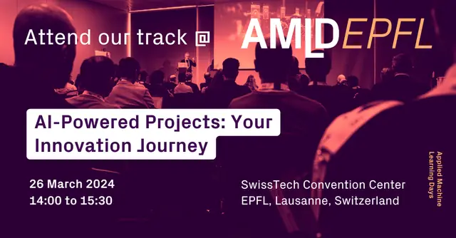
ActualitésNeur.on à l’AMLD EPFL 2024, du 23 au 26 mars au SwissTech Convention Center de Lausanne
Start-up, PME ou grand groupe comme Swisscom : à quoi ressemble un projet d’IA selon la taille de l’entreprise ? Neur.on partage ses défis et son optimisme lors d’une session organisée par la Vice-présidence pour l’innovation de l’EPFL.
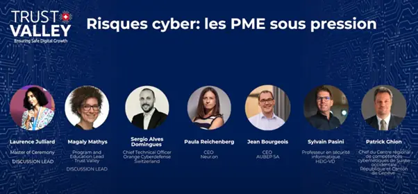
ActualitésTrust Valley Day 2023 : Neur.on au panel sur les risques cyber des PME
Les prestataires informatiques, porte d’entrée vers les grandes organisations, deviennent des cibles de choix. Au Trust Valley Day, la CEO de Neur.on a plaidé pour des infrastructures adaptées aux PME suisses qui veulent explorer l’IA en toute sécurité.
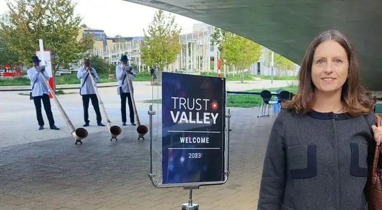
ActualitésTrust Valley 2023 : cybersécurité et souveraineté des données, une tradition suisse durable ?
Les projets de traduction juridique sont un maillon faible, souvent négligé, de la sécurité des données. Invitée par la Trust Valley, Neur.on partage les enseignements d’un panel sur les PME et pose la question d’une sandbox suisse à CHF 2,5 millions.
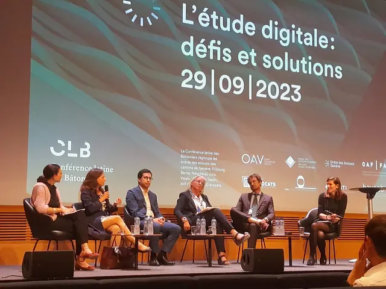
ActualitésLegalTech et avocats, alliés ou concurrents ? Leçons de la journée de l’étude digitale
La plupart des outils LegalTech veulent servir les avocats, pas les concurrencer. Leur adoption reste pourtant difficile. Adéquation aux processus de travail, interface intuitive et service clientèle réactif : trois clés pour réussir.
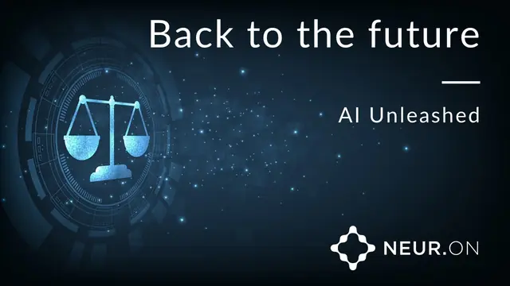
ActualitésConférence MIDS 2023 à Genève : Paula Reichenberg sur l’adoption de l’IA générative
Plus de 200 avocats et arbitres réunis pour les 15 ans du Master in International Dispute Settlement. Aux côtés du professeur Jacques de Werra, Paula Reichenberg a mis en parallèle l’IA générative et la traduction automatique.
ActualitésKilian Marty rejoint le conseil consultatif de Neur.on comme expert en cybersécurité
À la tête du département Cybersécurité de CertX AG, Kilian Marty apporte le regard d’un auditeur chevronné sur chaque aspect du dispositif de sécurité de Neur.on, aux côtés de Jean Hennebert et de Brian Firlit.
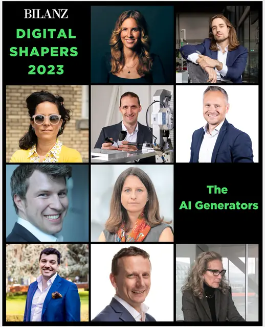
ActualitésPaula Reichenberg, CEO et fondatrice de Neur.on, nommée « Digital Shaper 2023 » par BILANZ
Une distinction qui revient à toute l’équipe. Neur.on y voit l’occasion de rappeler trois convictions sur la numérisation du droit : une technologie au service des avocats, la transparence et l’expertise humaine.
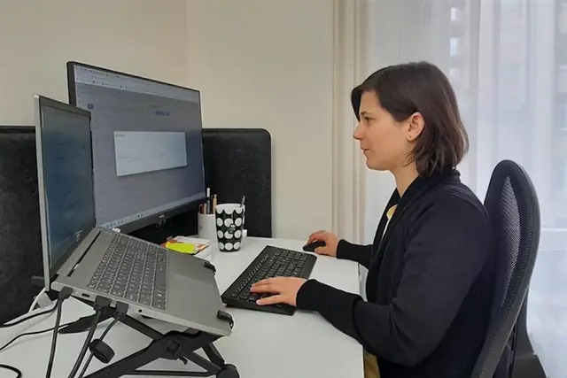
ActualitésSur orientation.ch, Orane Laeri, COO de Neur.on, retrace son parcours en linguistique
De ses études de traduction à l’Université de Genève à la direction des opérations d’une start-up LegalTech, Orane Laeri raconte son parcours. Pour elle, la machine ne remplace pas l’humain : elle rend le travail plus intéressant.
ActualitésLes start-up de l’IA doivent-elles craindre l’AI Act ? Les leçons du Grand Challenge
Huit solutions d’IA passées au crible du projet d’AI Act : Neur.on en tire trois enseignements, dont un levier de conformité peu coûteux pour les start-up aux finances tendues.
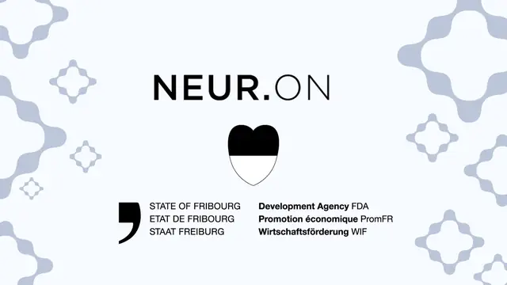
ActualitésL’État de Fribourg renforce son soutien à Neur.on pour la traduction juridique par IA
Déjà soutenu par Innosuisse, le projet de recherche de Neur.on mené avec l’institut iCoSys reçoit l’appui de l’État de Fribourg. La subvention financera la R&D, de nouveaux recrutements et le développement international.
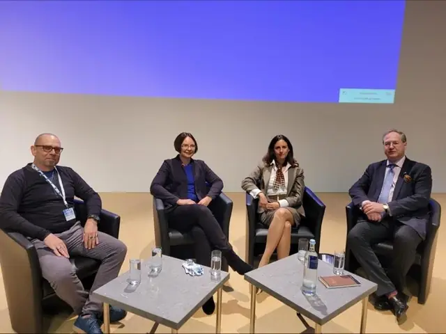
ActualitésConférence BDÜ 2022 : Paula Reichenberg sur la collaboration entre avocats et traducteurs
Les bonnes traductions naissent d’une communication ouverte entre avocats et traducteurs. Retour sur une table ronde de la conférence du BDÜ, et sur les attentes de chacun face à la traduction automatique.
Toutes les brèves de Neur.on, année par année
Les nouveaux articles et actualités, dès leur parution
Suivre Neur.on sur LinkedIn